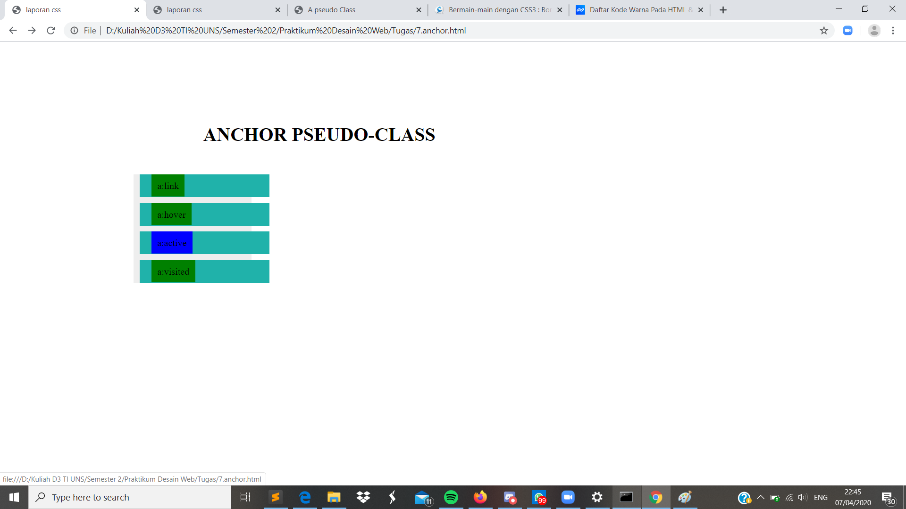

Anchor Pseudo-Class
Pendahuluan
Anchor Pseudo-class adalah untuk mendefinisikan status khusus pada elemen anchor/link. Ada beberapa keadaan ketika anchor digunakan. Diantaranya sebagai berikut.
- a:link = Keadaan awal dari sebuah link
- a:hover= Keadaan dimana sebua link ditunjuk oleh kursor mouse
- a:active= Keadaan dimana link sedang aktif
- a:visited= Keadaan dimana link sudah pernah dikunjungi
Codingan
<!DOCTYPE html>
<html lang="id">
<head>
<meta charset="utf-8">
<meta name="viewsport" content="width=device-width, initial-scale=1.0">
<title>laporan css</title>
<link rel="stylesheet" type="text/css" href="a-pseudoclass.css">
</head>
<body>
<h1><center>ANCHOR PSEUDO-CLASS</center></h1>
<div class="links">
<ul>
<li><a href="7.anchor.html">a:link</a></li>
<li><a href="7.anchor.html">a:hover</a></li>
<li><a href="7.anchor.html">a:active</a></li>
<li><a href="7.anchor.html">a:visited</a></li>
</ul>
</div>
</body>
</html>
Kode CSS Internal
* {width: 80%; margin: 5%; 10%; padding:0;}
.links ul{
width: 200px;
background: #EEEEEE;
list-style: none;
.links ul li{
width: 200px;
background:#20b2aa;
padding:10px;
}
.links a {
text-decoration:none;
color: #000000;
padding: 10px;
}
.links li a:active{background:red;}
.links li a:visited{background:green;}
.links li a:hover{background:blue;}
.links li a:link{background:pink;}
Hasil Screenshot

Analisis
Pada percobaan membuat anchor psudoclass kali ini kita dapat mengetahui status link apakah link tersebut aktif atau pernah dikunjungi.